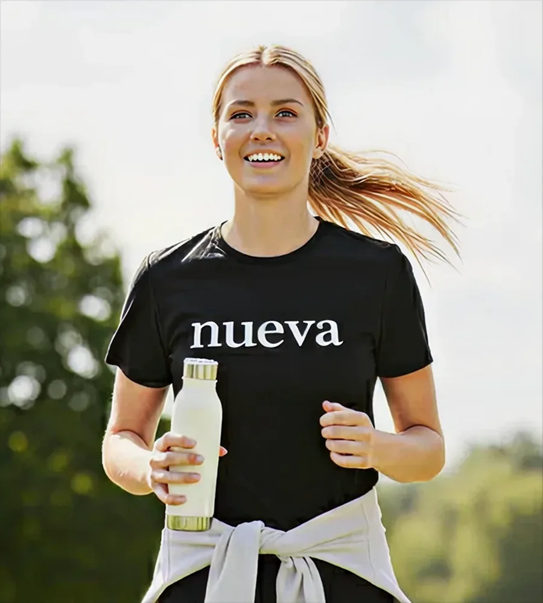
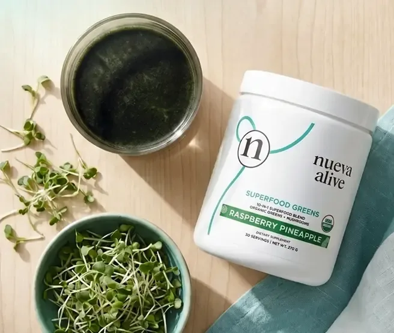
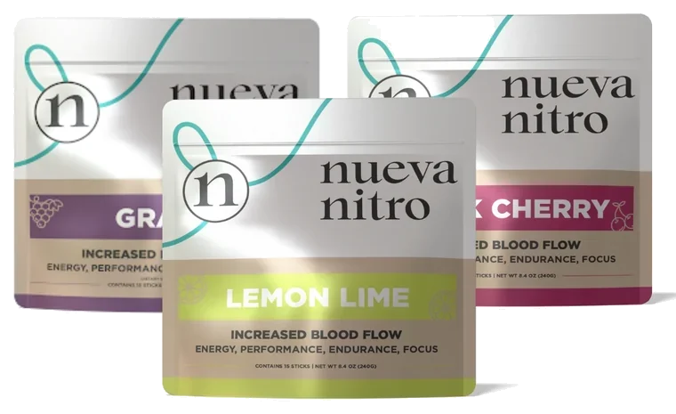
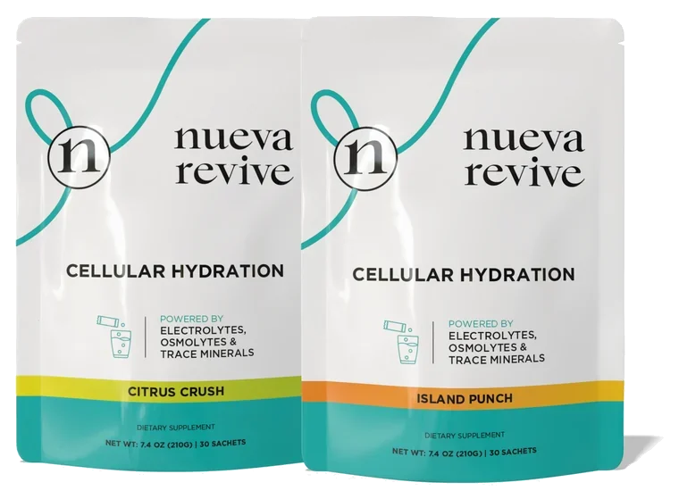
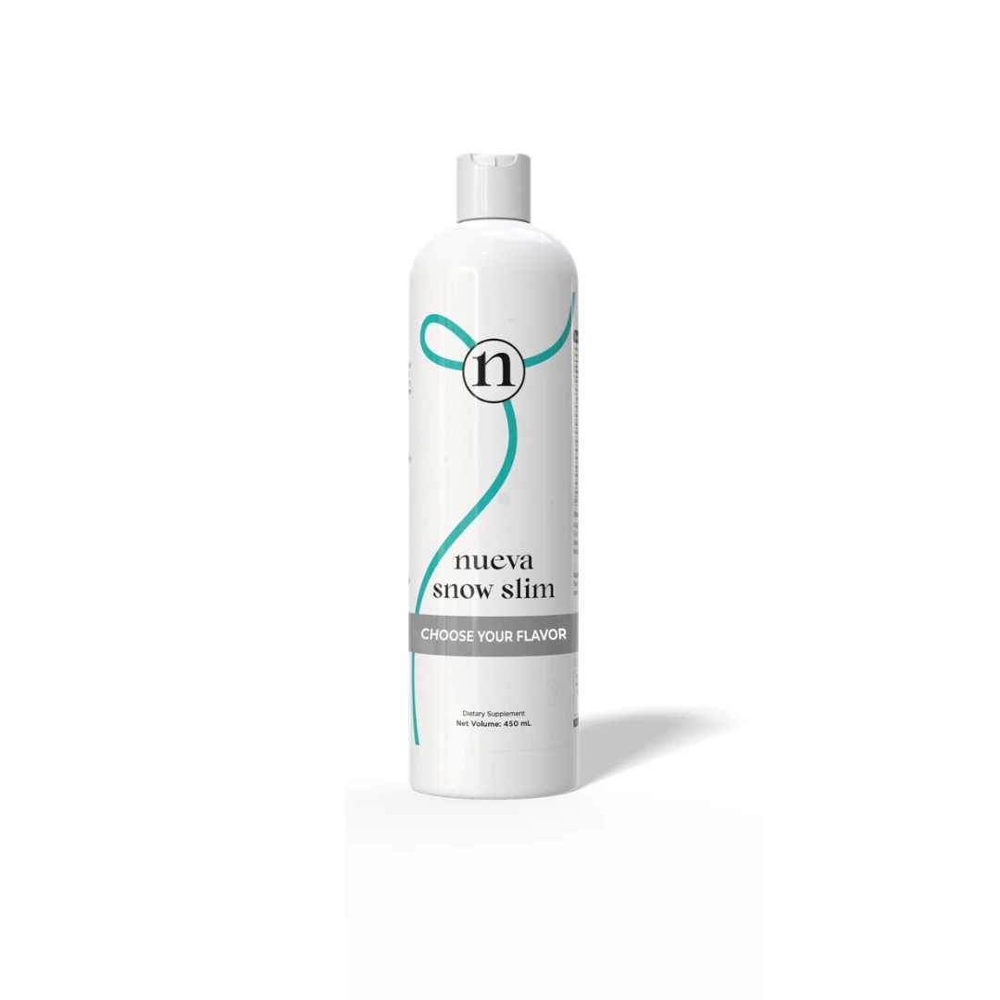
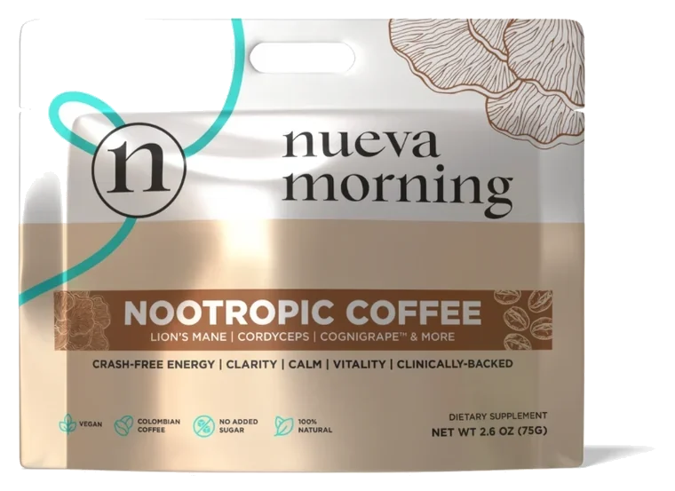
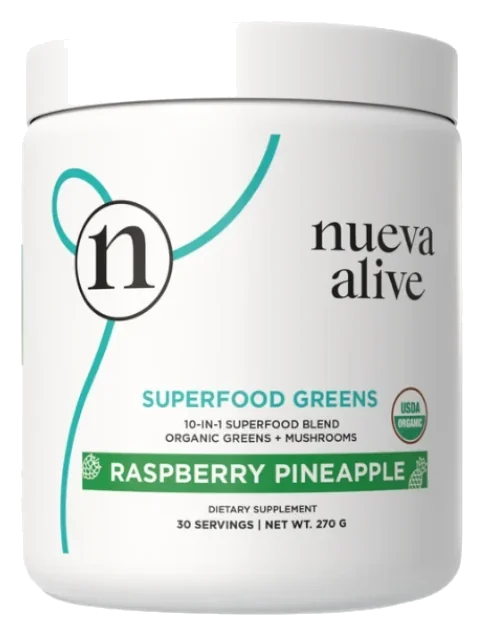
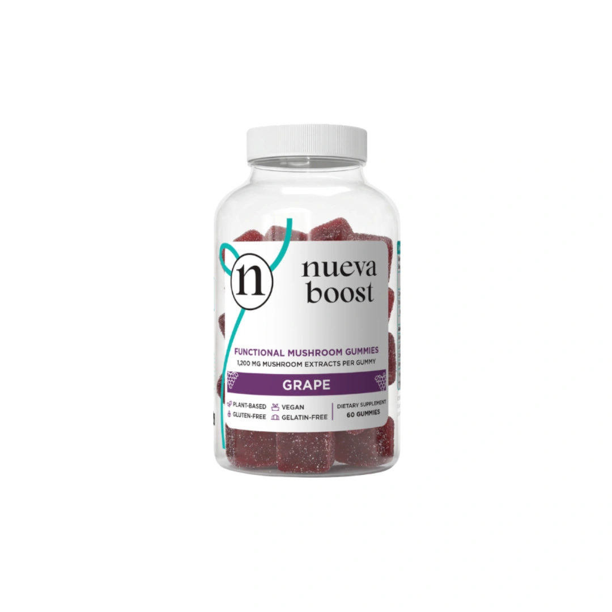

Una sola línea, hecha para combinarse
Empieza con un producto y agrega más poco a poco. Están hechos para tomarse juntos.
Te lo presenta {{custom_values.nueva_rep_full_name}}
Conoce Nueva
Nueva hace productos de bienestar para todos los días, pensados para tomarse juntos. También les paga a las personas que los comparten, hasta un 40% de las compras de sus clientes.
Las dos cosas están en esta página, así puedes ver cuál es la que te interesa.

Casi todos terminan con una alacena llena de envases de distintas compañías que nunca se hicieron para ir juntos. Nueva se hizo al revés: energía, hidratación, verdes, digestión, enfoque y peso, hechos para combinarse. Más de 70,000 miembros se han unido desde que empezó.

Empieza con un producto y agrega más poco a poco. Están hechos para tomarse juntos.
Se fabrican en instalaciones con certificación GMP y los prueba un laboratorio independiente.
Garantía de devolución de dinero de 30 días, y vale aunque el envase esté vacío.
Cada producto tiene un precio más bajo con suscripción, así el hábito cuesta menos que la prueba.
La línea
Cada línea de abajo sale de la etiqueta de Nueva. Lee la etiqueta antes de pedir, sobre todo si evitas algún ingrediente.

Un sobre que mezclas y dejas reposar cinco minutos. Hecho a base de L citrulina, cafeína de té verde y complejo B.

Un sobre de hidratación con su tecnología Aquivance de cinco capas, con electrolitos, glicina y minerales traza marinos.

Una cucharada de líquido al día, hecho a base de extracto de naranja roja Morosil. Contiene colágeno de pollo.

Café con melena de león, cordyceps y L teanina, si prefieres no sumar otra bebida a tu día.

Una mezcla de verdes con espirulina y prebióticos, para las verduras que casi nunca comemos.

Gomitas con melena de león, cordyceps, ashwagandha y reishi, si las cápsulas no son lo tuyo.
La otra parte
Si compartes Nueva, eres Social Marketer. No hay tienda, ni inventario en un cuarto ni nada que enviar. Compartes tu propio enlace, y cuando alguien compra con él, la venta queda a tu nombre. El plan publicado de Nueva paga hasta un 40% de las compras de los clientes.
{{custom_values.nueva_income_disclaimer}}
¿Preguntas?
Déjame tu nombre y tu número, y te contacto sobre los productos.
Dos puertas, y eres bienvenido(a) por cualquiera.
Estas declaraciones no han sido evaluadas por la Administración de Alimentos y Medicamentos (FDA). Estos productos no tienen la intención de diagnosticar, tratar, curar ni prevenir ninguna enfermedad.